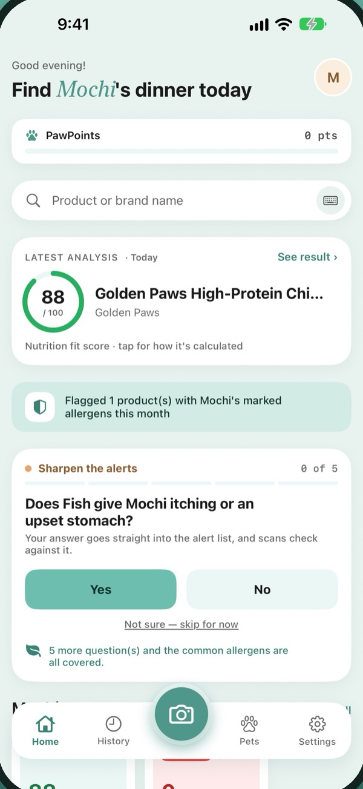
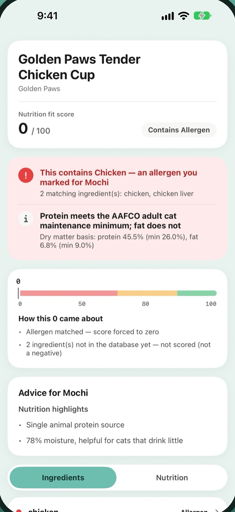
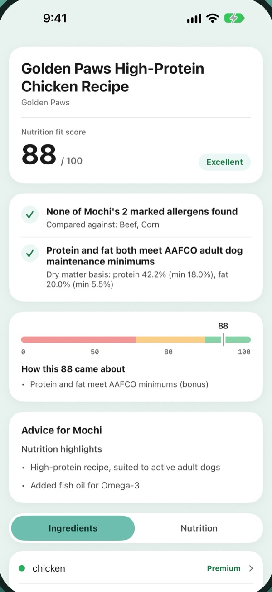
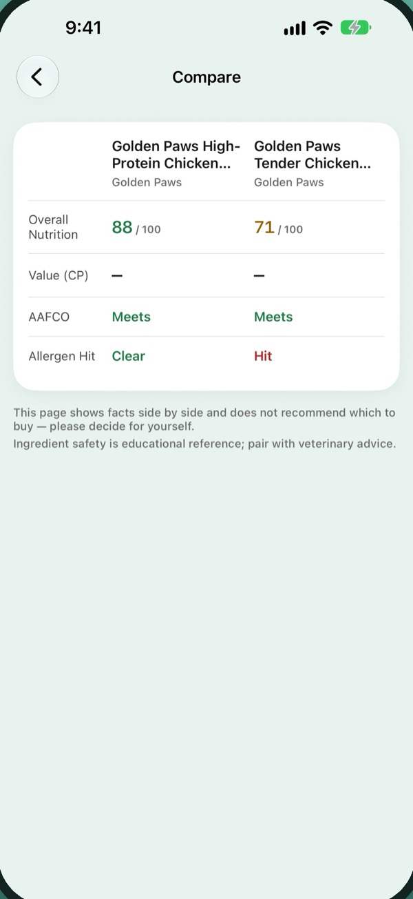

Personalized Allergen Alerts
Check ingredients against the allergens you've added to your pet's profile.
 Pawlaris
Pawlaris
Not every pet food is right for every dog or cat. Scan an ingredient label and Pawlaris checks it for allergens, flagged ingredients and nutrition, so you know what's inside before you fill the bowl.
Your first 5 full analyses are free. Allergen alerts stay free after that.

For centuries, travelers found their way by Polaris, the North Star. Pawlaris takes its name, and its job, from that star. Pet food labels are long and hard to read, so Pawlaris turns them into the few points that matter for your pet: allergens, flagged ingredients and nutrition. That way you can choose with more confidence, one bowl at a time.
Pawlaris is a guide, not a vet. It gives you educational information so you can ask better questions, and your veterinarian always has the final word on your pet’s diet and health.
Made by Sentira Labs, makers of small, quiet apps for people and the pets they love.
Pawlaris turns a hard-to-read ingredient label into the points that matter for your pet.
Check ingredients against the allergens you've added to your pet's profile.
Flag ingredients that may be harmful or need extra attention, based on ingredient safety data compiled by Pawlaris.
See how the food's nutritional values compare with published AAFCO standards, with the reasons behind the score.
Get plain-language explanations of ingredients, nutritional strengths and potential concerns.
See ingredients that may help or are worth watching, based on the health conditions you've entered.
Currently covers some conditions, including kidney, joint, weight management, skin and digestive concerns. For reference only, not medical advice.
Pick two foods from your scan history and review them side by side.
Choose dog or cat, add age and weight, and mark the allergens to avoid.
Photograph the ingredient label with your iPhone, or search our product database by brand or product name.
Allergens, ingredient flags and the nutrition score in one view, with the reasons right next to the score.



New Pawlaris users get 5 free full food analyses.
Included with the download
Monthly or yearly. See the App Store for prices in your region.
Monthly and yearly plans include a 7-day free trial for eligible new subscribers. Subscriptions renew automatically; cancel anytime in your Apple Account settings.
No tracking, no ads, and we never sell your data.
Read the privacy policy ›One is used only when you photograph a label and the analysis completes. Retakes, failed analyses and searches by brand or product name don't count.
Allergen alerts stay free. The rest of the full analysis requires Pawlaris Pro.
Not yet. Photograph the ingredient label, or search by brand or product name.
No. Pawlaris provides educational pet nutrition information only. Always consult your veterinarian about your pet's dietary and health needs.
Your first 5 full analyses are free, and allergen alerts stay free.